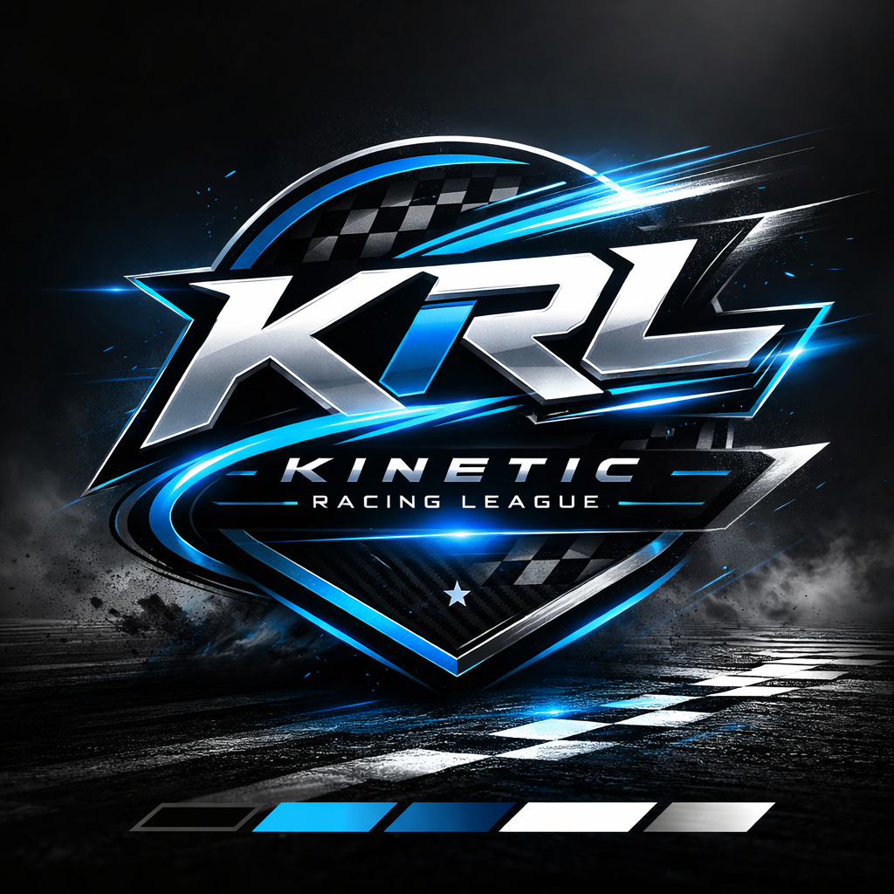

Serious and competitive NASCAR 25 league (that also encourages new drivers) and "free" first-time iRacing development racing league with mixed-level skil for Season 1.
Join DiscordSeason 1 starts August 5th and will run through the beginning of October.
This is KRL's first go at iRacing and we are here to support brand new drivers as well as higher skilled drivers mixed into the field. Recruiting all skill levels!Click here for more information.